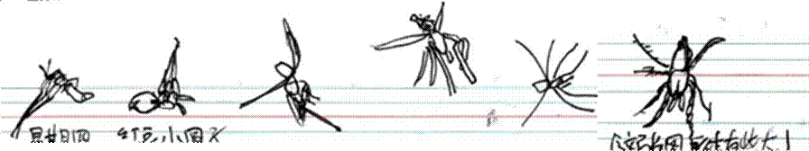
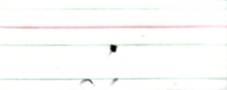

周恩来周报周恩来周报 第九期 2025.6.26
5 月 21 日午餐时间，初一（1）班某同学在红豆小圆子汤中发现一只虫（被画，见下图），引发

在场学生关注。该事件迅速在校园内传播，部分学生表示担忧。
生物韩老师表示：该生物有四对足（但有一只足不见了），有传闻说道是被郑子宸同学吃了，他表示：味苦，稍其酸。目前，这只虫子业已[1]移交吴老师，将改天反映。目前杳如黄鹤[2]。

5 月 29 日，某同学在新品绿豆汤中又吃到小虫（见右图）。自此，学校汤的口碑不再好，喝汤人渐渐少。
“跟着诗仙李白游皖南”研学课程安排
|
天数 |
上午 |
下午 |
|
1 |
开营仪式 分发物料包出发，奔赴宣城 |
初遇诗仙（敬亭山） |
|
2 |
掌帘捞纸(汉唐纸坊) 学生将亲眼见证“轻似蝉翼白如雪，抖似细绸不闻声” 的奇迹诞生。亲手舀起纸浆，感受水流在帘上的律动， 体会匠人如何将时光与智慧注入薄薄一张纸。 文房四宝（宣笔厂） 学生将在研学中亲历“尖、齐、圆、健”四德兼具的神笔诞生。亲手梳理笔毛的细腻，感受捆扎笔头的力道，体会匠人如何将毫厘之间的精准化作书写的流畅. |
重走铁军之路（新四军部） 在研学过程中，驻足当年作战指挥室斑驳的地图前，聆听可歌可泣的英雄事迹. |
|
3 |
浪漫诗仙（桃花潭） 研习诗词创作，体悟古人以景抒情、托物言志的文学智慧，让传统文化的种子在参与者心中生根发芽，激发对中华诗词与文学艺术的热爱，传承绵延千年的诗意文脉。 参与者可以跟随专业导师，探索青弋江流域的水文特征，观察湿地生态中多样的动植物，了解喀斯特地貌的形成与演变。通过采集水样检测水质、记录候鸟迁徙轨迹等实践活动，将课本中的地理、生物知识转化为生动的科学认知，培养探索自然的兴趣与科学研究能力，树立人与自然和谐共生的生态理念。 |
追红色先驱足迹（王稼祥故居） 参观故居内的历史照片、书信文献，聆听王稼祥在遵义会议上投出“关键一票”、推动中国革命走向正确道路的传奇故事，以及他在外交战线、理论建设等领域的卓越贡献. 古建之美（查济古村） 漫步青石板路，穿梭于祠堂、民居与桥梁之间，学生可近距离观察“青砖小瓦马头墙，回廊挂落花格窗” 的独特造型. |
周恩来周报
|
4 |
千年文房瑰宝（旌德宣砚文化园） 学生们可以观看从粗糙原石到精美砚台的蜕变过程，了解每道工序的操作要点和技巧。 |
结营仪式 辞别宣城 |
||
|
以上研学地点如遇天气或政策，景区限流等不可抗力因素影响导致行程无法进行，将更换为其他研学地点。 【研学服务标准及费用】 时间：全程 4 天 3 夜，暑假期间进行，（实践、教育、体验、学习）； 住宿：携程四钻酒店标准间，干净整洁，空调、独卫独浴；用餐：社会正规酒店十人桌餐；出行：在研学期间由专业大巴车队全程陪同； 保险：旅行社责任险 100 万元、旅行意外险 10 万元全程覆盖；费用：1980 元，费用全包含；每人赠送：营员证、研学衣服、研学课程手册； 每 45 人为一营：配备一名研学导师，2 名本校老师，一名专业讲解员全程陪同讲解。 |
研学行程介绍
|
|
||
|
|
||||
（周敦颐）掾南安时，程珀通判军事，视其气貌非常人。与语，知其为学知道。因与为友，使二子颢颐往受业焉。敦颐每令寻孔颜乐处，所乐何事。二程之学，源流乎此矣。（《宋史·道学传》）
【交相辉映】（各种光亮、彩色等)相互映照：星月灯火，～。
【劈波斩浪】船只行进时冲开波浪，比喻排除前进中的困难和障碍。
|
1. rise (自立上升 vi.不加宾语) 意思：自己“上升”或“增长”（无外力）。 例句： The sun rises in the east.（红日东升。） Prices are rising.（物价在上涨。） The flag rose（rise 的过去式是 rose）.（旗 子自己升起。） |
2. raise (外力托举 vt.要加宾语) 意思：需要外力“举起”或“提高”某物。 例句： She **raised** her hand.（她举起了手。） The company **raised** salaries.（公司提高 了工资。） |
|
简单记：rise = 自己动，raise = 让别人动。 |
|
《任所寄乡关故旧》周敦颐老子生来骨性寒，宦情不改旧儒酸。停杯厌饮香醪味，举箸常餐淡菜盘。事冗不知筋力倦，官清赢得梦魂安。
故人欲问吾何况，为道舂陵只一般。
颈联：事冗不倦：公务繁忙却不觉疲惫，因心有所持。
官清梦安：清廉自守故夜梦安稳（与《爱莲说》"不染"精神相通）。